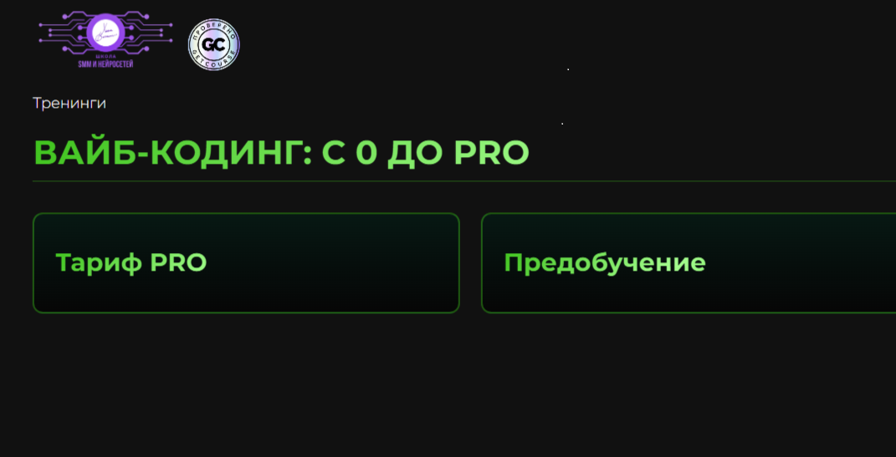

Лендинги
Сайты, которые не просто “естьˮ, а собирают внимание, держат ритм и ведут человека по смыслу.
Vibe Coder / Portfolio / Web & AI Experiences
Не просто “что-то сверстатьˮ, а собрать ощущение, стиль, логику и подачу так, чтобы проект хотелось открыть, листать и запомнить.
Я работаю на стыке кода, визуала, UX и AI-инструментов. Для меня сайт — это не набор блоков. Это ощущение от проекта, ритм, подача, структура и то, как человек чувствует себя внутри интерфейса.
Мой подход — сделать быстро, красиво и не бездумно. Чтобы проект не выглядел как очередной шаблон, собранный без вкуса и идеи.
Набор сильных форматов — под задачу, стиль и сценарий.
Сайты, которые не просто “естьˮ, а собирают внимание, держат ритм и ведут человека по смыслу.
Страницы, которые показывают не только работы, но и стиль, характер и уровень.
Когда нужен не просто сайт, а ощущение: атмосфера, характер, настроение, подача.
Использую нейросети как инструмент ускорения и усиления идей, а не как замену мышлению.
Продумываю, как человек читает, куда смотрит, где теряется и где принимает решение.
Могу собрать сильную первую версию быстро, без месяцев бесконечных согласований.
Вайб — это не “красиво”. Это точное ощущение, которое помогает проекту выглядеть цельно и работать понятнее.
Я смотрю не только на задачу, но и на ощущение, которое должен передавать проект.
Красивый сайт без логики — это просто красивая обёртка. Поэтому я собираю смысл, сценарий и путь пользователя.
Когда есть стиль и логика, проект собирается быстрее, точнее и выглядит сильно.
Превью в одном формате: без растягивания, лёгкая обрезка по краям — как в макетной сетке.

Лендинг для digital-продукта с акцентом на атмосферу, скорость восприятия и современный визуал.
Что сделано: структура, тексты, дизайн-концепция, сборка.
Хочу так же →Личный сайт-портфолио, который показывает не только кейсы, но и стиль человека.
Что сделано: позиционирование, подача, визуальный ритм, упаковка работ.
Обсудить →Промо-страница под воронку и digital-продукт с акцентом на конверсию и лёгкость восприятия.
Что сделано: логика блоков, тексты, CTA, визуальный каркас.
Собрать страницу →
Сайт с упором на трендовую подачу, сильный первый экран и ощущение “это хочется переслатьˮ.
Что сделано: creative direction, структура, визуальная концепция.
Погнали →Реальные имена и компании можно подставить под ваши кейсы. Листайте секцию вниз — отзывы сменяют друг друга.
Сайт вышел не «как у всех», а с характером: быстро собрали v1, потом дожали детали. Рекомендую, если нужен и вайб, и структура.
Продуманная подача и честная работа с текстами. Страница стала понятнее для клиентов — это ощущается по откликам.
Нужен был лендинг «вчера» — получили сильный первый экран и логику блоков без лишней суеты. Очень довольны темпом.
Видно насмотренность: сетка, типографика, ритм — всё на уровне. Отдельный плюс за прозрачную коммуникацию по этапам.
Потому что я умею видеть проект целиком: не только как это собрать, но и как это подать — где человек зацепится взглядом, что запомнит и почему это будет выглядеть дороже, чем стоит.
Коротко о стеке — и честно о главном.
Но если честно — главный инструмент не стек, а вкус, насмотренность и умение собирать цельное впечатление.
Когда нужен сайт с характером, а не “ещё одна безликая страница”.
Хороший сайт — это не когда “нормально сверстаноˮ. Это когда у проекта появляется энергия, форма и ощущение, что он живой.
Могу помочь с концепцией, структурой, упаковкой и реализацией. От первого вайба до готовой страницы.